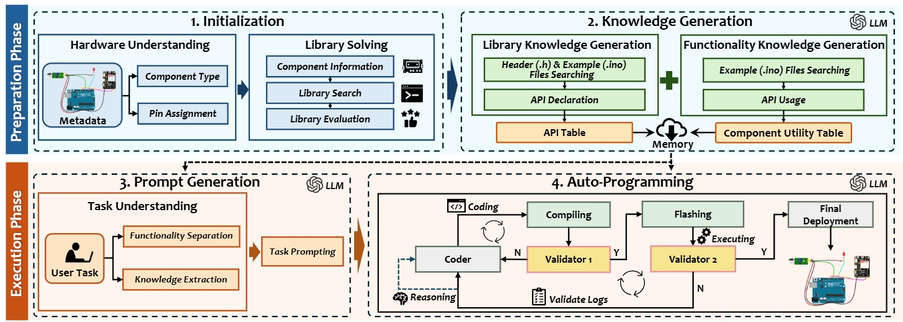
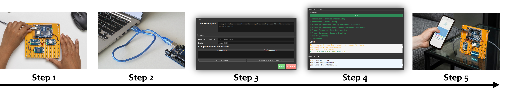

City University of Hong Kong • Shandong University
What is AutoEmbed and why does it matter?
Embedded IoT system development is crucial for enabling seamless connectivity and functionality across a wide range of applications. However, such a complex process requires cross-domain knowledge of hardware and software and hence often necessitates direct developer involvement, making it labor-intensive, time-consuming, and error-prone. To address this challenge, this paper introduces AutoEmbed, the first fully automated software development platform for general-purpose embedded IoT systems. The key idea is to leverage the reasoning ability of Large Language Models (LLMs) and embedded system expertise to automate the hardware-in-the-loop development process. The main methods include a component-aware library resolution method for addressing hardware dependencies, a library knowledge generation method that injects utility domain knowledge into LLMs, and an auto-programming method that ensures successful deployment. We evaluate AutoEmbed's performance across 71 modules and four mainstream embedded development platforms with over 350 IoT tasks. Experimental results show that AutoEmbed can generate codes with an accuracy of 95.7% and complete tasks with a success rate of 86.5%, surpassing human-in-the-loop baselines by 15.6%–37.7% and 25.5%–53.4%, respectively. We also show AutoEmbed's potential through case studies in environmental monitoring and remote control systems development.
AutoEmbed's four-stage pipeline automates the full embedded IoT development lifecycle.

Figure 1. AutoEmbed system overview: Library Solving → Knowledge Generation → Selective Memory Injection → Auto-Programming.
Component-aware library resolution identifies the exact hardware libraries needed, eliminating dependency guesswork.
Library-specific domain knowledge is synthesized and injected into the LLM context for accurate hardware interaction.
Relevant prior knowledge and examples are selectively retrieved and composed into the prompt for precise code generation.
Generated code is automatically compiled, verified, and flashed to the target device with iterative error correction.
AutoEmbed is available as an open-source desktop application for Windows and macOS, built with Electron, React, and Python.
The AutoEmbed GUI provides a streamlined interface to describe your IoT task, specify connected hardware components, and let the pipeline handle everything from library resolution to flashing your device — no manual IDE configuration required.
From task description to flashed device in five steps, fully automated.

Figure 2. End-to-end user workflow from task specification to device deployment.
Connect your Arduino (or compatible) board to the PC via USB. Attach sensors, actuators, and other modules.
Open the AutoEmbed desktop app, type a natural-language task description, and list the hardware components in use.
AutoEmbed executes the full four-stage pipeline: library solving → knowledge generation → prompt assembly → LLM-driven code synthesis.
The generated code is automatically compiled with Arduino CLI, errors are iteratively corrected, and the binary is flashed to the connected device.
Your IoT system starts running immediately. No manual IDE, no library hunting — zero to deployed in minutes.
Watch AutoEmbed build real IoT systems end-to-end from a plain text description.
If you find AutoEmbed useful in your research, please cite our paper.